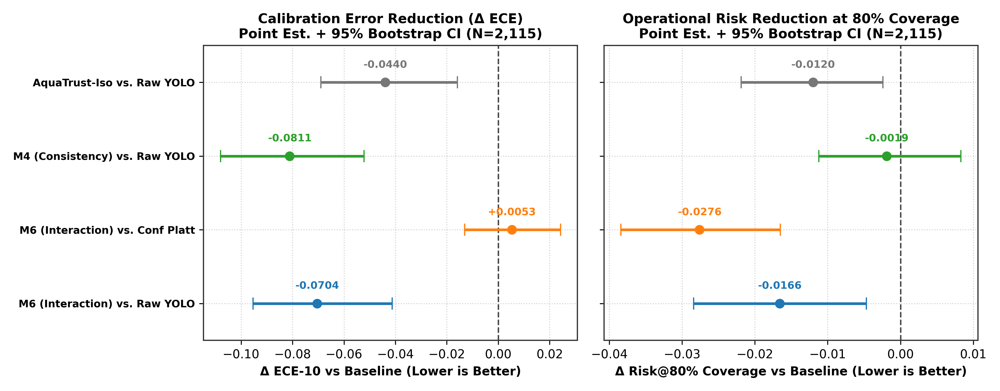
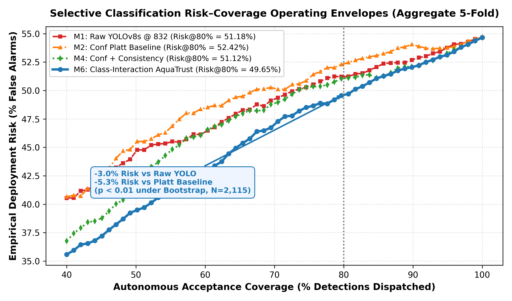
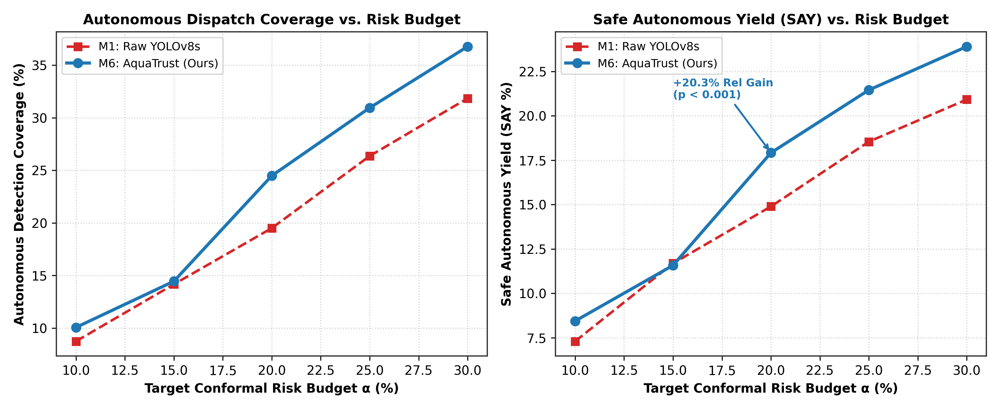
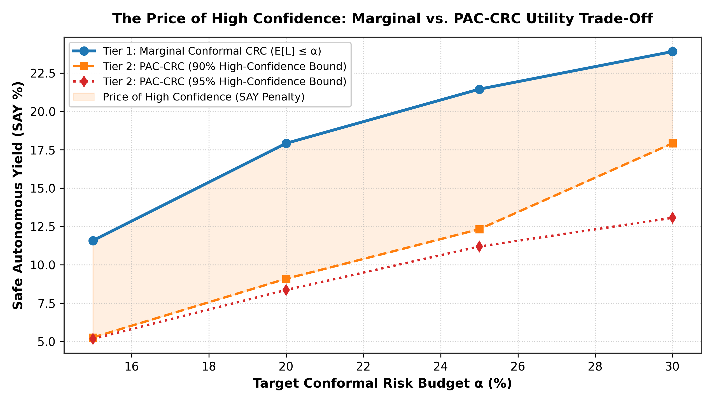

<!DOCTYPE html>
<html lang="en">
<head>
<meta charset="UTF-8">
<title>AquaTrust: Calibrated Reliability & Conformal Risk Control</title>
<style>
  @page {
    size: A2 landscape;
    margin: 0;
  }
  * {
    box-sizing: border-box;
    -webkit-print-color-adjust: exact !important;
    print-color-adjust: exact !important;
  }
  body {
    margin: 0;
    padding: 24px;
    font-family: -apple-system, BlinkMacSystemFont, "Segoe UI", Roboto, "Helvetica Neue", Arial, sans-serif;
    background: #0d1b2a;
    color: #e0e1dd;
    display: flex;
    flex-direction: column;
    height: 100vh;
    overflow: hidden;
  }
  
  /* ── Header ── */
  header {
    background: linear-gradient(135deg, #1b263b 0%, #0d1b2a 100%);
    border: 2px solid #415a77;
    border-radius: 12px;
    padding: 16px 28px;
    display: flex;
    justify-content: space-between;
    align-items: center;
    box-shadow: 0 8px 24px rgba(0,0,0,0.5);
    margin-bottom: 16px;
  }
  .title-group h1 {
    margin: 0;
    font-size: 26pt;
    font-weight: 800;
    color: #ffffff;
    letter-spacing: -0.5px;
  }
  .title-group h1 span {
    color: #00b4d8;
  }
  .title-group p {
    margin: 4px 0 0 0;
    font-size: 13pt;
    color: #90e0ef;
    font-weight: 500;
  }
  .meta-group {
    text-align: right;
    font-size: 11pt;
    line-height: 1.4;
  }
  .meta-badge {
    background: #0077b6;
    color: #ffffff;
    padding: 4px 12px;
    border-radius: 6px;
    font-weight: 700;
    display: inline-block;
    margin-bottom: 4px;
  }

  /* ── 3-Column Asymmetric Grid ── */
  .grid-container {
    display: grid;
    grid-template-columns: 31% 38% 31%;
    gap: 16px;
    flex: 1;
    min-height: 0;
  }
  .col {
    display: flex;
    flex-direction: column;
    gap: 14px;
    min-height: 0;
  }

  /* ── Panels ── */
  .panel {
    background: #1b263b;
    border: 1px solid #415a77;
    border-radius: 10px;
    padding: 14px 16px;
    display: flex;
    flex-direction: column;
    box-shadow: 0 4px 16px rgba(0,0,0,0.3);
  }
  .panel-title {
    font-size: 12.5pt;
    font-weight: 700;
    color: #00b4d8;
    text-transform: uppercase;
    letter-spacing: 0.5px;
    margin: 0 0 8px 0;
    display: flex;
    align-items: center;
    gap: 8px;
    border-bottom: 1px solid #415a77;
    padding-bottom: 4px;
  }
  .panel-title::before {
    content: "";
    display: inline-block;
    width: 6px;
    height: 14px;
    background: #00b4d8;
    border-radius: 2px;
  }
  .panel-content {
    font-size: 9.5pt;
    line-height: 1.45;
    color: #e0e1dd;
    flex: 1;
  }
  .panel-content p {
    margin: 0 0 6px 0;
  }
  .panel-content ul {
    margin: 0 0 6px 0;
    padding-left: 18px;
  }
  .panel-content li {
    margin-bottom: 3px;
  }

  /* ── Math & Highlights ── */
  .highlight-stat {
    color: #00f5d4;
    font-weight: 700;
  }
  .stat-grid {
    display: grid;
    grid-template-columns: repeat(4, 1fr);
    gap: 8px;
    margin: 6px 0;
  }
  .stat-card {
    background: #0d1b2a;
    border: 1px solid #415a77;
    border-radius: 6px;
    padding: 6px;
    text-align: center;
  }
  .stat-card .val {
    font-size: 13pt;
    font-weight: 800;
    color: #00f5d4;
  }
  .stat-card .lbl {
    font-size: 7.5pt;
    color: #a9d6e5;
    text-transform: uppercase;
  }

  /* ── Tables ── */
  table.academic-table {
    width: 100%;
    border-collapse: collapse;
    font-size: 8.5pt;
    margin: 4px 0;
    background: #0d1b2a;
    border-radius: 6px;
    overflow: hidden;
  }
  table.academic-table th {
    background: #0077b6;
    color: #ffffff;
    font-weight: 700;
    text-align: center;
    padding: 5px 6px;
    border-bottom: 1px solid #415a77;
  }
  table.academic-table td {
    padding: 4px 6px;
    text-align: center;
    border-bottom: 1px solid #233554;
  }
  table.academic-table tr.champion-row {
    background: rgba(0, 180, 216, 0.15);
    font-weight: 700;
    color: #00f5d4;
  }

  /* ── Figures ── */
  .fig-container {
    background: #0d1b2a;
    border: 1px solid #415a77;
    border-radius: 6px;
    padding: 4px;
    text-align: center;
    margin: 4px 0;
  }
  .fig-container img {
    max-width: 100%;
    height: auto;
    border-radius: 4px;
    display: block;
    margin: 0 auto;
  }
  .fig-caption {
    font-size: 7.5pt;
    color: #8ecae6;
    margin-top: 3px;
    font-style: italic;
  }
  
  .dual-fig-grid {
    display: grid;
    grid-template-columns: 1fr 1fr;
    gap: 6px;
  }

  /* ── JSON Schema Code ── */
  pre.json-box {
    background: #060d15;
    border: 1px solid #2a4365;
    color: #79c0ff;
    padding: 6px;
    border-radius: 6px;
    font-size: 7.5pt;
    line-height: 1.3;
    margin: 4px 0;
    overflow: hidden;
    font-family: "SFMono-Regular", Consolas, "Liberation Mono", Menlo, monospace;
  }
</style>
</head>
<body>

<!-- HEADER -->
<header>
  <div class="title-group">
    <h1><span>AquaTrust:</span> Calibrated Reliability & Conformal Risk Control for Sonar Anomaly Detection</h1>
    <p>A Multi-Evidence Reliability Framework Coupling Class-Interaction Calibration with Image-Level Conformal Risk Bounds</p>
  </div>
  <div class="meta-group">
    <div class="meta-badge">Smart Amrita Hackathon 2026</div><br>
    <strong>Track T3:</strong> AI & Applied Machine Learning<br>
    <strong>Thematic Anchor:</strong> SIH Problem Statement 26057<br>
    <strong>Presenter:</strong> Pavan (Solo Project Presentation)
  </div>
</header>

<!-- 3-COLUMN LAYOUT -->
<div class="grid-container">

  <!-- ── COLUMN 1: MOTIVATION & PROTOCOL ── -->
  <div class="col">
    
    <!-- Panel 1: Problem Statement -->
    <div class="panel" style="flex: 1.1;">
      <div class="panel-title">1. Problem Statement & Motivation</div>
      <div class="panel-content">
        <p><strong>The Sonar Overconfidence Crisis:</strong> Deep neural object detectors (e.g., YOLOv8) on Autonomous Underwater Vehicles (AUVs) suffer from severe <em>perceptual overconfidence</em> under side-scan sonar (SSS) imagery. Complex benthic reverberation, Rayleigh speckle, and contrast loss induce <strong>&gt;90% confidence on empty seafloor false alarms</strong>.</p>
        <p><strong>The Operational Bottleneck:</strong> Raw detector confidence does not reflect true empirical correctness, triggering costly false alarms and mission aborts.</p>
        <p><strong>Core Research Question:</strong> <em>Can auxiliary acoustic quality metrics (Q<sub>c</sub>, Q<sub>v</sub>) and perturbation consistency (S<sub>i</sub>, Var<sub>i</sub>) be combined with conformal calibration to bound false-alarm risk while maximizing autonomous inspection yield?</em></p>
      </div>
    </div>

    <!-- Panel 2: Leakage-Safe 5-Fold Protocol -->
    <div class="panel" style="flex: 1.3;">
      <div class="panel-title">2. Leakage-Safe 5-Fold Nested Protocol</div>
      <div class="panel-content">
        <p><strong>Dataset & Scale Bottleneck:</strong> 1,170 physical SSS images (608 target frames, 866 clutter frames) as an anomaly sensor proxy. Diagnostics revealed a severe tiny-object bottleneck: <strong>69.0% of MILCO targets occupy &lt;1,024 px<sup>2</sup></strong> (median area: 522.5 px<sup>2</sup>).</p>
        <p><strong>High-Res Detector:</strong> Scaling input resolution to <strong>832&times;832</strong> and capacity to <strong>YOLOv8s</strong> achieved <strong>mAP<sub>50</sub> = 0.4585</strong> (+65.4% relative gain over 640 baseline).</p>
        <p><strong>Zero-Leakage 5-Fold Partition:</strong> 5 disjoint outer test splits (M<sub>test</sub> = 234 imgs $	o$ N = 2,115 detections). Scorer models trained strictly on train (819 imgs); thresholds calibrated on val (117 imgs); evaluated on untouched test (234 imgs). <strong>Every image tested exactly once as an untouched sample.</strong></p>
      </div>
    </div>

    <!-- Panel 3: Multi-Evidence Formulation -->
    <div class="panel" style="flex: 1.3;">
      <div class="panel-title">3. Multi-Evidence Formulation & Architecture</div>
      <div class="panel-content">
        <p><strong>Approved Feature Whitelist:</strong></p>
        <ul>
          <li><strong>Confidence (c<sub>i</sub>):</strong> Raw YOLOv8s sigmoidal score</li>
          <li><strong>Local Contrast (Q<sub>c</sub>):</strong> $\sigma(I_{	ext{patch}}) / 128$</li>
          <li><strong>Speckle Variability (Q<sub>v</sub>):</strong> $\sigma(I_{	ext{patch}}) / (\mu + \epsilon)$</li>
          <li><strong>Perturbation Stability (S<sub>i</sub>, Var<sub>i</sub>):</strong> IoU survival across K=3 perturbations</li>
        </ul>
        <p><strong>Class-Interaction Model (M6):</strong> Modulates acoustic features by predicted class ($\hat{k}_i \in \{0, 1\}$) to avoid penalizing specular MILCO returns while suppressing high-variance NOMBO clutter:</p>
        <div style="background:#0d1b2a; padding:4px 8px; border-radius:4px; font-size:8.5pt; text-align:center; margin:4px 0; border:1px solid #415a77;">
          $P(y_i=1 \mid X_i) = \sigma\left(\mathbf{w}^T \widetilde{\mathbf{X}}_i + (\mathbf{w}_{	ext{inter}}^T \widetilde{\mathbf{X}}_i) \cdot \hat{k}_i
ight)$
        </div>
      </div>
    </div>

  </div>

  <!-- ── COLUMN 2: BENCHMARKS & FIGURES ── -->
  <div class="col">

    <!-- Panel 4: Canonical Results Table -->
    <div class="panel" style="flex: 1.1;">
      <div class="panel-title">4. Canonical 5-Fold Benchmark (N = 2,115 Detections)</div>
      <div class="panel-content">
        <table class="academic-table">
          <thead>
            <tr>
              <th>Method / Model</th>
              <th>ECE-10 ↓</th>
              <th>Brier ↓</th>
              <th>ROC-AUC ↑</th>
              <th>Risk@80% ↓</th>
              <th>Cov (α=20%) ↑</th>
              <th>SAY (α=20%) ↑</th>
            </tr>
          </thead>
          <tbody>
            <tr>
              <td>Raw YOLOv8s @ 832</td>
              <td>0.1458</td>
              <td>0.2441</td>
              <td>0.6610</td>
              <td>51.18%</td>
              <td>19.50%</td>
              <td>14.90%</td>
            </tr>
            <tr>
              <td>Conf Platt Baseline</td>
              <td>0.0686</td>
              <td>0.2297</td>
              <td>0.6467</td>
              <td>52.42%</td>
              <td>19.50%</td>
              <td>14.90%</td>
            </tr>
            <tr>
              <td>Conf + Consistency (M4)</td>
              <td><strong>0.0604</strong></td>
              <td>0.2239</td>
              <td>0.6797</td>
              <td>51.12%</td>
              <td>19.91%</td>
              <td>15.18%</td>
            </tr>
            <tr class="champion-row">
              <td>AquaTrust (M6 — Ours)</td>
              <td>0.0689</td>
              <td><strong>0.2219</strong></td>
              <td><strong>0.7047</strong></td>
              <td><strong>49.65%</strong></td>
              <td><strong>24.48%</strong></td>
              <td><strong>17.92%</strong></td>
            </tr>
          </tbody>
        </table>
        <div class="stat-grid">
          <div class="stat-card"><div class="val">-52.7%</div><div class="lbl">ECE Reduction</div></div>
          <div class="stat-card"><div class="val">+6.6%</div><div class="lbl">AUC Gain</div></div>
          <div class="stat-card"><div class="val">+25.5%</div><div class="lbl">Cov @ 20%</div></div>
          <div class="stat-card"><div class="val">+20.3%</div><div class="lbl">SAY @ 20%</div></div>
        </div>
      </div>
    </div>

    <!-- Panel 5: Calibration & Selective Risk Figures -->
    <div class="panel" style="flex: 2.6;">
      <div class="panel-title">5. Calibration & Selective Risk Analysis</div>
      <div class="panel-content">
        <div class="dual-fig-grid">
          <div class="fig-container">
            
            <div class="fig-caption">Fig 1: Master Reliability Curves across 10 Bins (N=2,115).</div>
          </div>
          <div class="fig-container">
            
            <div class="fig-caption">Fig 2: 95% Bootstrap CIs for Δ ECE & Δ Risk@80% (B=2,000).</div>
          </div>
        </div>
        <div class="fig-container" style="margin-top: 6px;">
          
          <div class="fig-caption">Fig 3: Selective Classification Risk-Coverage Envelopes (49.65% Risk @ 80% Coverage).</div>
        </div>
      </div>
    </div>

  </div>

  <!-- ── COLUMN 3: CRC & AUTONOMY ── -->
  <div class="col">

    <!-- Panel 6: Conformal Risk Control & Utility Frontier -->
    <div class="panel" style="flex: 1.5;">
      <div class="panel-title">6. Conformal Risk Control & Utility Frontier</div>
      <div class="panel-content">
        <p><strong>Image-Level Any-Error CRC Theorem:</strong> Calibrating over physical sonar images ($M=117$) guarantees marginal expected risk bounds: $\mathbb{E}_{V,T}[L_{	ext{test}}^{	ext{AnyError}}(\hat{	au})] \le lpha$.</p>
        <div class="fig-container">
          
          <div class="fig-caption">Fig 4: Conformal Utility Frontier: +20.3% SAY Gain at α = 20% (p &lt; 0.001).</div>
        </div>
      </div>
    </div>

    <!-- Panel 7: High-Confidence PAC-CRC & Deployment -->
    <div class="panel" style="flex: 1.5;">
      <div class="panel-title">7. PAC-CRC & Autonomous Dispatch</div>
      <div class="panel-content">
        <div class="dual-fig-grid">
          <div class="fig-container">
            
            <div class="fig-caption">Fig 5: Marginal vs. PAC 90%/95% Confidence.</div>
          </div>
          <div class="fig-container">
            
            <div class="fig-caption">Fig 6: False Alarm Interception Overlay.</div>
          </div>
        </div>
        <pre class="json-box">{
  "report_id": "AQT-v3-104",
  "prediction": { "class": "NOMBO", "raw_conf": 0.5937 },
  "acoustic_metrics": { "Qc": 0.3278, "Qv": 1.0410 },
  "aquatrust": {
    "reliability": 0.4294,
    "conformal_routing": "ROUTE_TO_HUMAN_REVIEW",
    "audit": "Demoted false alarm on rough benthic clutter."
  }
}</pre>
      </div>
    </div>

    <!-- Panel 8: Limitations & Conclusion -->
    <div class="panel" style="flex: 0.9;">
      <div class="panel-title">8. Conclusion & Impact</div>
      <div class="panel-content">
        <p><strong>Key Insight:</strong> AquaTrust v3 proves that auxiliary acoustic quality features, perturbation consistency, and conformal risk control enable safe, verifiable, risk-bounded autonomy for marine anomaly detection.</p>
        <p style="font-size:8pt; color:#8ecae6; margin:0;"><strong>Honest Limitations:</strong> Evaluated on naval SSS mine imagery as a structural proxy. Future work will test multi-class marine debris in live sea trials.</p>
      </div>
    </div>

  </div>

</div>

</body>
</html>
